The diffusion kurtosis model is an expansion of the diffusion tensor model (see Reconstruction of the diffusion signal with the Tensor model). In addition to the diffusion tensor (DT), the diffusion kurtosis model quantifies the degree to which water diffusion in biological tissues is non-Gaussian using the kurtosis tensor (KT) [Jensen2005].
Measurements of non-Gaussian diffusion from the diffusion kurtosis model are of interest because they can be used to charaterize tissue microstructural heterogeneity [Jensen2010] and to derive concrete biophysical parameters, such as the density of axonal fibres and diffusion tortuosity [Fierem2011]. Moreover, DKI can be used to resolve crossing fibers in tractography and to obtain invariant rotational measures not limited to well-aligned fiber populations [NetoHe2015].
The diffusion kurtosis model expresses the diffusion-weighted signal as:
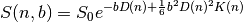
where  is the applied diffusion weighting (which is dependent on
the measurement parameters), 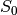 is the signal in the absence of diffusion
gradient sensitization, 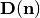 is the value of diffusion along
direction
is the applied diffusion weighting (which is dependent on
the measurement parameters), 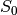 is the signal in the absence of diffusion
gradient sensitization, 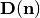 is the value of diffusion along
direction  , and 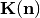 is the value of kurtosis along
direction . The directional diffusion and kurtosis
can be related to the diffusion tensor (DT) and kurtosis tensor
(KT) using the following equations:
, and 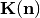 is the value of kurtosis along
direction . The directional diffusion and kurtosis
can be related to the diffusion tensor (DT) and kurtosis tensor
(KT) using the following equations:

and

where  are the elements of the second-order DT, and 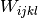 the
elements of the fourth-order KT and 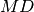 is the mean diffusivity. As the DT,
KT has antipodal symmetry and thus only 15 Wijkl elemments are needed to fully
characterize the KT:
are the elements of the second-order DT, and 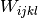 the
elements of the fourth-order KT and 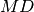 is the mean diffusivity. As the DT,
KT has antipodal symmetry and thus only 15 Wijkl elemments are needed to fully
characterize the KT:
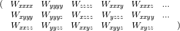
In the following example we show how to fit the diffusion kurtosis model on diffusion-weighted multi-shell datasets and how to estimate diffusion kurtosis based statistics.
First, we import all relevant modules:
import numpy as np
import dipy.reconst.dki as dki
import dipy.reconst.dti as dti
import matplotlib.pyplot as plt
from dipy.data import fetch_cenir_multib
from dipy.data import read_cenir_multib
from dipy.segment.mask import median_otsu
from dipy.denoise.noise_estimate import estimate_sigma
from dipy.denoise.nlmeans import nlmeans
DKI requires multi-shell data, i.e. data acquired from more than one non-zero b-value. Here, we use fetch to download a multi-shell dataset with parameters that are similar to the data collected in the Human Connectome Project (HCP). The total size of the downloaded data is 1760 MBytes, however you only need to fetch it once. Parameter with_raw of function fetch_cenir_multib is set to False to only download eddy-current/motion corrected data:
fetch_cenir_multib(with_raw=False)
Next, we read the saved dataset. To decrease the influence of diffusion signal Taylor approximation components larger than the fourth order (componets not taken into account by the diffusion kurtosis tensor), we only select the b-values up to 2000 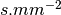:
bvals = [200, 400, 1000, 2000]
img, gtab = read_cenir_multib(bvals)
data = img.get_data()
affine = img.get_affine()
Function read_cenir_multib return img and gtab which contains respectively a nibabel Nifti1Image object (where the data can be extracted) and a GradientTable object with information about the b-values and b-vectors.
Before fitting the data, we preform some data pre-processing. We first compute a brain mask to avoid unnecessary calculations on the background of the image.
maskdata, mask = median_otsu(data, 4, 2, False, vol_idx=[0, 1], dilate=1)
Since the diffusion kurtosis models involves the estimation of a large number of parameters [TaxCMW2015] and since the non-Gaussian components of the diffusion signal are more sensitive to artefacts [NetoHe2012], a fundamental data pre-processing step for diffusion kurtosis fitting is to denoise our data. For this, we use Dipy’s non-local mean filter (see example-denoise-nlmeans). Note that, since the HCP-like data has a large number of diffusion-weigthed volumes, this procedure can take a couple of hours to compute the entire dataset. Therefore, to speed the run time in this example we only denoise an axial slice of the data.
axial_slice = 40
sigma = estimate_sigma(data, N=4)
mask_roi = np.zeros(data.shape[:-1], dtype=bool)
mask_roi[:, :, axial_slice] = mask[:, :, axial_slice]
den = nlmeans(data, sigma=sigma, mask=mask_roi)
den = den[:, :, axial_slice, :]
Now that we have loaded and prepared the voxels to process we can go forward with the voxel reconstruction. This can be done by first instantiating the DiffusionKurtosisModel in the following way:
dkimodel = dki.DiffusionKurtosisModel(gtab)
To fit the data using the defined model object, we call the fit function of this object:
dkifit = dkimodel.fit(den)
The fit method creates a DiffusionKurtosisFit object which contains all the diffusion and kurtosis fitting parameters and other DKI attributes. For instance, since the diffusion kurtosis model estimates the diffusion tensor, all diffusion standard tensor statistics can be computed from the DiffusionKurtosisFit instance. For example, we show below how to extract the fractional anisotropy (FA), the mean diffusivity (MD), the axial diffusivity (AD) and the radial diffusivity (RD) from the DiffusionKurtosisiFit instance.
FA = dkifit.fa
MD = dkifit.md
AD = dkifit.ad
RD = dkifit.rd
Note that these four standard measures could also be computed from Dipy’s DTI module. Theoretically, computing these measures from both models should be analogous. However, since the diffusion kurtosis model involves a larger number of parameters, diffusion statistics maps can look more noisy. On the other hand, the diffusion statistics from the kurtosis model are expected to have better accuracy [Veraar2011]. For comparison purposes, we calculate below the FA, MD, AD, and RD using Dipy’s TensorModel.
tenmodel = dti.TensorModel(gtab)
tenfit = tenmodel.fit(den)
dti_FA = tenfit.fa
dti_MD = tenfit.md
dti_AD = tenfit.ad
dti_RD = tenfit.rd
The DT based measures can be easly visualized using matplotlib. For example, the FA, MD, AD, and RD obtain from the diffusion kurtosis model (upper panels) and the tensor model (lower panels) are plotted for the selected axial slice.
fig1, ax = plt.subplots(2, 4, figsize=(12, 6),
subplot_kw={'xticks': [], 'yticks': []})
fig1.subplots_adjust(hspace=0.3, wspace=0.05)
ax.flat[0].imshow(FA, cmap='gray')
ax.flat[0].set_title('FA (DKI)')
ax.flat[1].imshow(MD, cmap='gray')
ax.flat[1].set_title('MD (DKI)')
ax.flat[2].imshow(AD, cmap='gray')
ax.flat[2].set_title('AD (DKI)')
ax.flat[3].imshow(RD, cmap='gray')
ax.flat[3].set_title('RD (DKI)')
ax.flat[4].imshow(dti_FA, cmap='gray')
ax.flat[4].set_title('FA (DTI)')
ax.flat[5].imshow(dti_MD, cmap='gray')
ax.flat[5].set_title('MD (DTI)')
ax.flat[6].imshow(dti_AD, cmap='gray')
ax.flat[6].set_title('AD (DTI)')
ax.flat[7].imshow(dti_RD, cmap='gray')
ax.flat[7].set_title('RD (DTI)')
plt.show()
fig1.savefig('Diffusion_tensor_measures_from_DTI_and_DKI.png')
From the figure, we can see that the standard diffusion measures of the HCP-like data obtained from the diffusion kurtosis model have similar contrasts to the standard diffusion measures obtain from the tensor model. This can be explained by the high quality of the dataset and the high performance of the diffusion kurtosis fit procedure.
In addition to the standard diffusion statistics, the DiffusionKurtosisFit instance can be used to estimate the non-Gaussian measures of mean kurtosis (MK), the axial kurtosis (AK) and the radial kurtosis (RK).
MK = dkifit.mk(0, 3)
AK = dkifit.ak(0, 3)
RK = dkifit.rk(0, 3)
Kurtosis measures are susceptible to high amplitude outliers. The impact of high amplitude kurtosis outliers were removed on the above lines of codes by introducing as an optional input the extremes of the typical values of kurtosis (assumed here as the values on the range between 0 and 3)
Now we are ready to plot the kurtosis standard measures using matplotlib:
fig2, ax = plt.subplots(1, 3, figsize=(12, 6),
subplot_kw={'xticks': [], 'yticks': []})
fig2.subplots_adjust(hspace=0.3, wspace=0.05)
ax.flat[0].imshow(MK, cmap='gray')
ax.flat[0].set_title('MK')
ax.flat[1].imshow(AK, cmap='gray')
ax.flat[1].set_title('AK')
ax.flat[2].imshow(RK, cmap='gray')
ax.flat[2].set_title('RK')
plt.show()
fig2.savefig('Kurtosis_tensor_standard_measures.png')
The non-Gaussian behaviour of the diffusion signal is larger when water diffusion is restrited by compartments and barriers (e.g., myelin sheath). Therefore, as the figure above shows, white matter kurtosis values are smaller along the axial direction of fibers (smaller amplitudes shown in the AK map) than for the radial directions (larger amplitudes shown in the RK map).
References:
| [TaxCMW2015] | Tax CMW, Otte WM, Viergever MA, Dijkhuizen RM, Leemans A (2014). REKINDLE: Robust extraction of kurtosis INDices with linear estimation. Magnetic Resonance in Medicine 73(2): 794-808. |
| [Jensen2005] | Jensen JH, Helpern JA, Ramani A, Lu H, Kaczynski K (2005). Diffusional Kurtosis Imaging: The Quantification of Non_Gaussian Water Diffusion by Means of Magnetic Resonance Imaging. Magnetic Resonance in Medicine 53: 1432-1440 |
| [Jensen2010] | Jensen JH, Helpern JA (2010). MRI quantification of non-Gaussian water diffusion by kurtosis analysis. NMR in Biomedicine 23(7): 698-710 |
| [Fierem2011] | Fieremans E, Jensen JH, Helpern JA (2011). White matter characterization with diffusion kurtosis imaging. NeuroImage 58: 177-188 |
| [NetoHe2012] | Neto Henriques R, Ferreira H, Correia M, (2012). Diffusion kurtosis imaging of the healthy human brain. Master Dissertation Bachelor and Master Programin Biomedical Engineering and Biophysics, Faculty of Sciences. http://repositorio.ul.pt/bitstream/10451/8511/1/ulfc104137_tm_Rafael_Henriques.pdf |
| [NetoHe2015] | Neto Henriques R, Correia MM, Nunes RG, Ferreira HA (2015). Exploring the 3D geometry of the diffusion kurtosis tensor - Impact on the development of robust tractography procedures and novel biomarkers, NeuroImage 111: 85-99 |
| [Veraar2011] | Veraart J, Poot DH, Van Hecke W, Blockx I, Van der Linden A, Verhoye M, Sijbers J (2011). More Accurate Estimation of Diffusion Tensor Parameters Using Diffusion Kurtosis Imaging. Magnetic Resonance in Medicine 65(1): 138-145 |
Example source code
You can download the full source code of this example. This same script is also included in the dipy source distribution under the doc/examples/ directory.